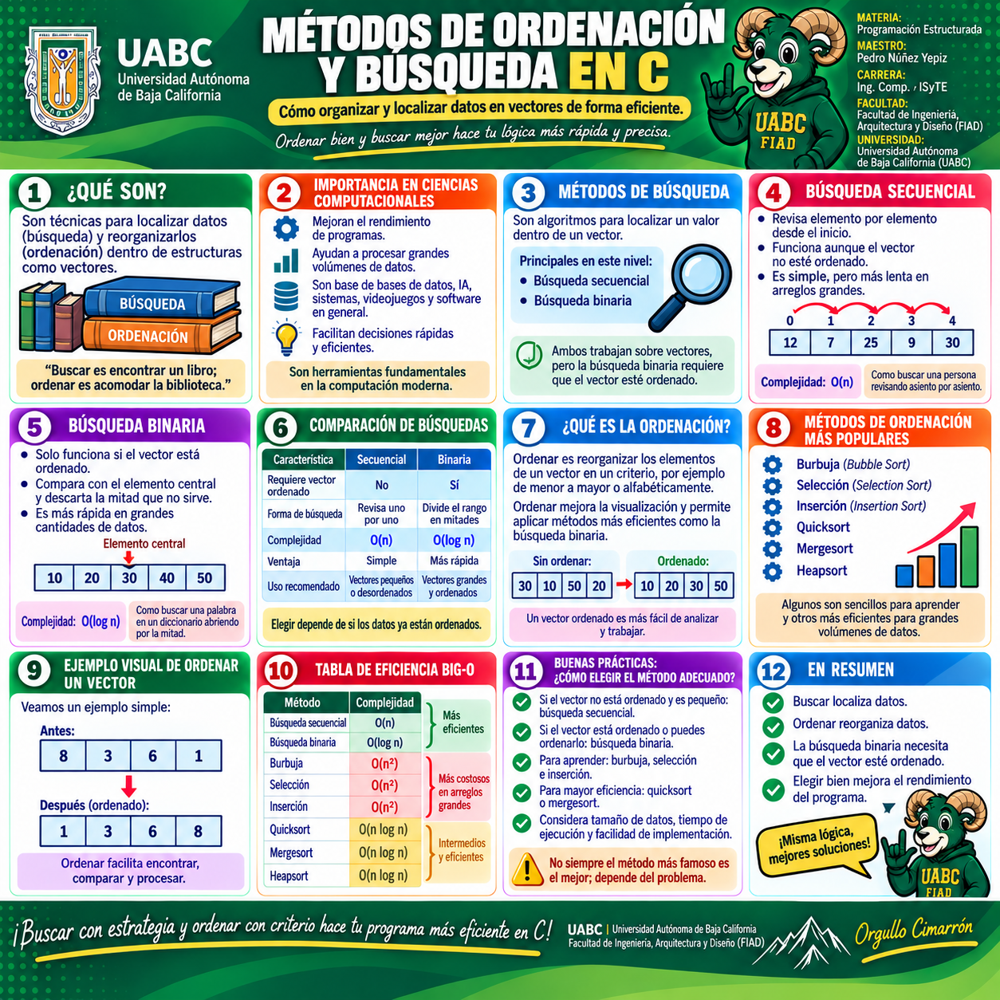
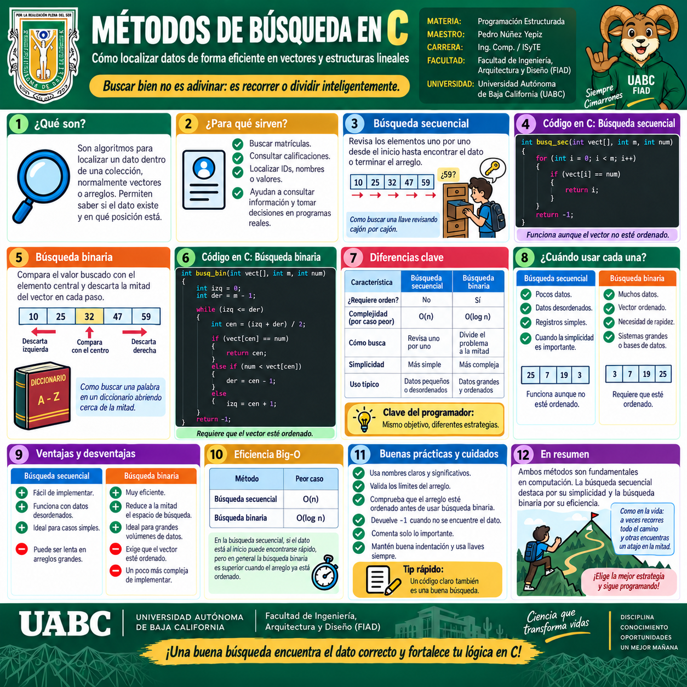
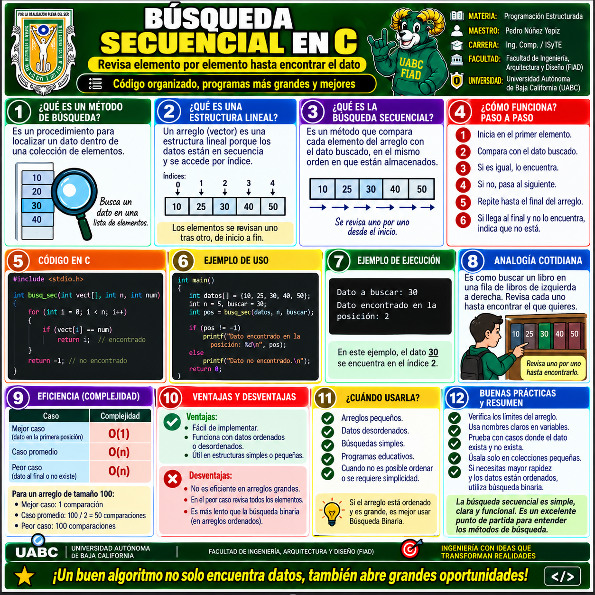
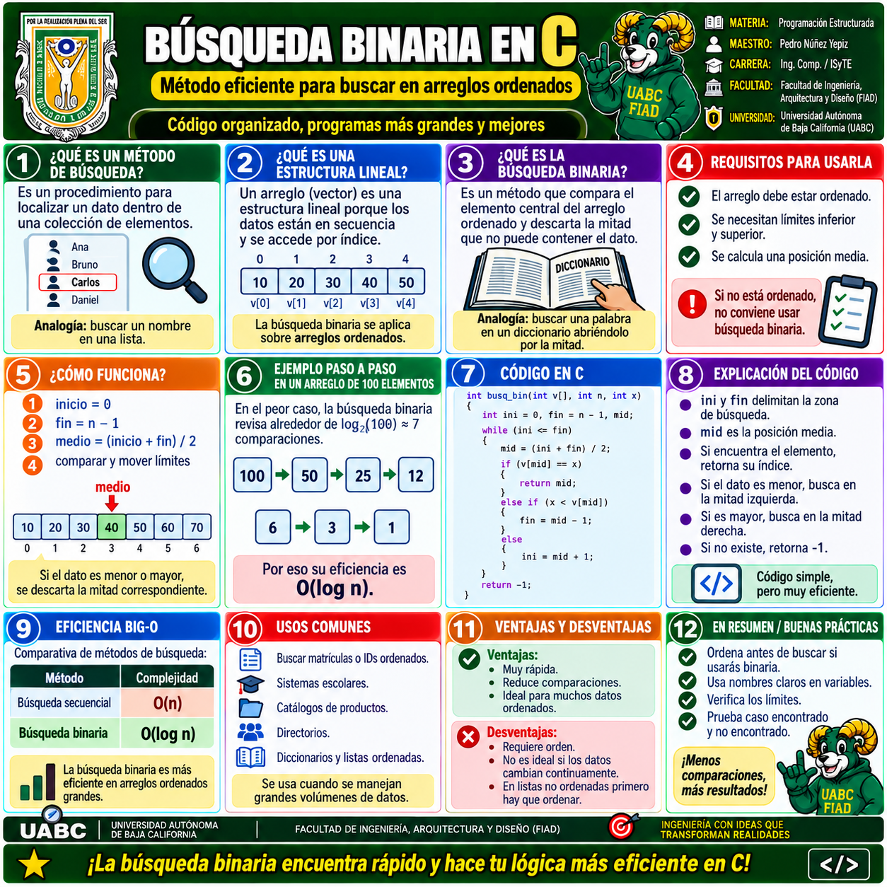
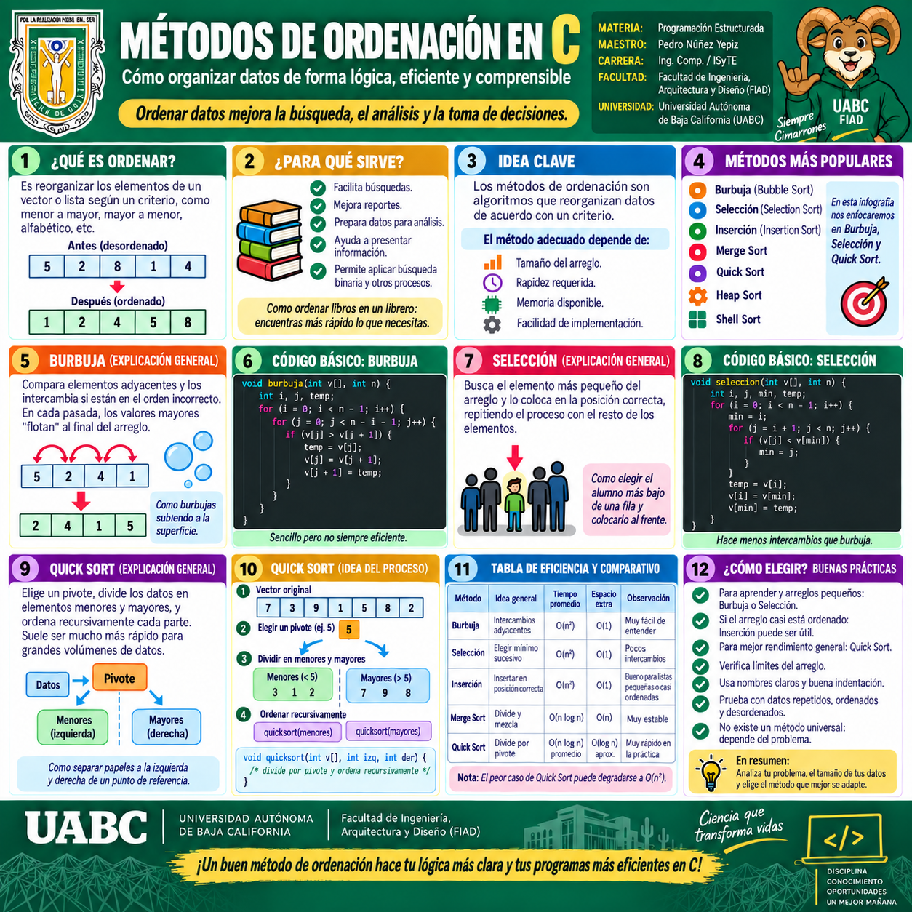
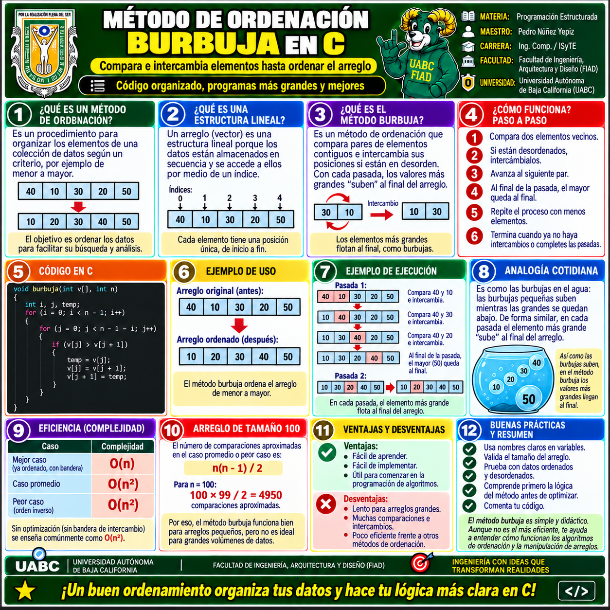
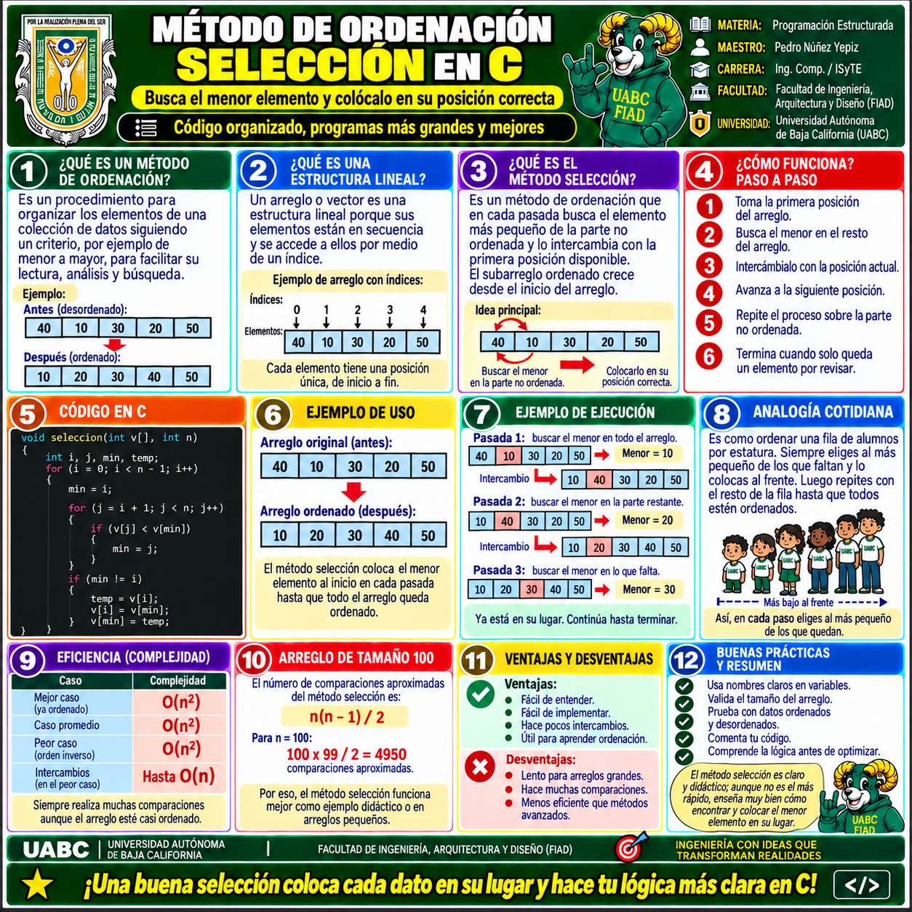
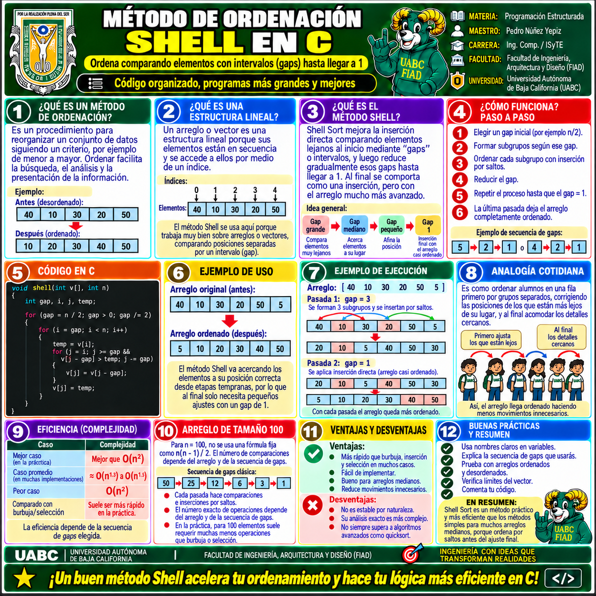
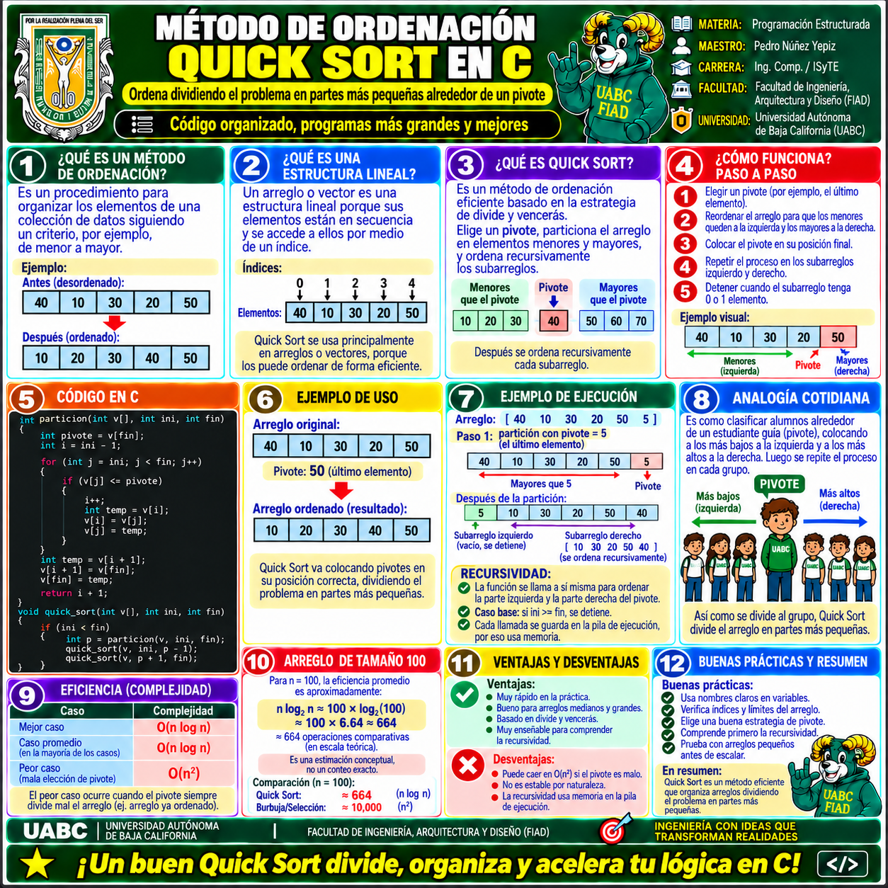

📚 Galería visual del Tema 13
Esta galería reúne todas las infografías del Tema 13. La primera presenta una visión general de Ordenación y Búsqueda. Después se estudian primero los métodos de búsqueda y posteriormente los métodos de ordenación, incluyendo Burbuja, Selección, Shell y Quick Sort.
Haz clic en cualquier imagen o en Ver y ampliar para abrirla en el visor y utilizar las herramientas de zoom.

1 · Métodos de Ordenación y Búsqueda en C
Panorama general del Tema 13: relación entre ordenar y buscar, métodos principales y eficiencia.

2 · Métodos de Búsqueda en C
Conceptos generales de búsqueda, criterios de elección y comparación de estrategias.

3 · Búsqueda Secuencial
Recorrido elemento por elemento, lógica del algoritmo, ventajas, limitaciones y ejemplo en C.

4 · Búsqueda Binaria
Divide progresivamente el espacio de búsqueda sobre datos ordenados y mejora la eficiencia.

5 · Métodos de Ordenación en C
Panorama de los principales algoritmos de ordenación, criterios de comparación y eficiencia.

6 · Ordenación Burbuja
Comparación e intercambio de elementos para llevar progresivamente los valores a su posición.

7 · Ordenación por Selección
Selecciona el menor o mayor elemento pendiente y lo coloca en su posición correspondiente.

8 · Ordenación Shell
Ordenación por saltos o intervalos que reduce gradualmente la distancia entre elementos comparados.

9 · Quick Sort
Divide el arreglo alrededor de un pivote y ordena recursivamente las particiones resultantes.
🧠 Puntos clave
Reorganiza los elementos según un criterio.
Localiza un dato dentro de una colección.
Permite comparar la eficiencia de los algoritmos.
El mejor método depende del problema.
Ordenar ayuda a organizar los datos; buscar permite localizarlos. Comprender ambas estrategias y su eficiencia ayuda a seleccionar soluciones más claras y rápidas.